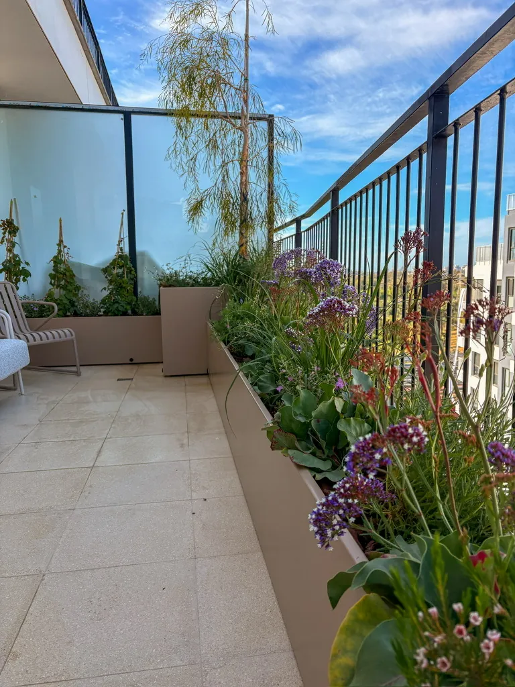

המדריך המקצועי לבחירה נכונה: לפי כיוון, קומה ותנאי האקלים הישראלי

הטעות הכי נפוצה: בוחרים צמחים לפי מה שנראה יפה בחנות, בלי להתחשב בתנאים של המרפסת. מרפסת מזרחית ומרפסת מערבית הן עולמות שונים לגמרי. לפני שבוחרים, שתי שאלות:
| כיוון | תנאים | מה עובד |
|---|---|---|
| מזרח | שמש בוקר, צל מחצות | רוב הצמחים, עשבי תיבול |
| מערב | שמש חזקה אחה"צ, חום | צמחים עמידי חום, מדבריים |
| דרום | שמש מלאה כל היום | קטקטוסים, לבנדר, אגבות |
| צפון | כמעט ללא שמש ישירה | שרכים, פוקסיות, פיקוס |
מעל קומה 8, רוח חזקה ואידוי מהיר. בחרו צמחים עמידים יותר ועציצים כבדים שלא יתהפכו.
מרפסת דרומית מקבלת שמש ישירה כל שעות היום. בקיץ הישראלי זה אומר חום עז שיכול לשרוף צמחים לא מותאמים, אבל עם הבחירה הנכונה, זו ההזדמנות הטובה ביותר לגינה ים-תיכונית אמיתית.
צמחים שמצליחים במרפסת דרומית: לבנדר, רוזמרין, אגבה, בוגנוויליה, פרנסיה (פלומריה), ריחן, אורגנו. כולם עמידי חום ושמש ישירה. עציצים כהים מתחממים מהר; עדיפות לעציצים בהירים או לחיפוי בד צללת.
טיפ קיץ: להשקות לפני 8:00 בבוקר או אחרי 18:00. השקיה בשיא החום שורפת עלים ומאדה לפני שהמים מגיעים לשורשים.
מרפסת צפונית כמעט ולא מקבלת שמש ישירה. סביבה קרירה ולחה יחסית כל השנה. האתגר: רוב הצמחים האהובים (לבנדר, ריחן, רוזמרין) לא ישרדו כאן. הפתרון: עולם שלם של צמחי אור עקיף שנראים מדהים.
צמחים שמתאימים במרפסת צפונית: שרך בוסטון, פוקוס, קלתאה, מונסטרה, פוקסיה, אגלאונמה, דרצנה. כולם אוהבים אור עקיף ורמת לחות גבוהה יחסית. לשמור שהאדמה לחה אך לא רוויה.
עמיד לחום ולחצי שמש. ריח מדהים, פורח בסגול. דורש מינימום השקיה לאחר הקמה.
שימושי לבישול ועמיד לקיצוניות. כמעט בלתי ניתן להרוס. גדל מצוין לצד מטבח.
מלכת המרפסת הדרומית. עמידה לחום ולבצורת, כמעט לא צריכה מים. נראית מדהים בעציץ גדול.
פורחת בקיץ בצבעים חזקים. עמידה לחום. צריכה סורג לטיפוס, מצוינת למרפסת עם קיר.
עץ טרופי עם פרחים מדהימים וריח חזק. אוהב שמש. מתאים לפנטהאוז ומרפסת דרומית גדולה.
עלווה גדולה, מתאים להצללה ולמסך פרטיות. אוהב אור עקיף. מצוין למרפסות מוצלות.
פרחים לבנים מדהימים, עמיד לחיצוניות, חוזר כל שנה. מתאים לרוב הכיוונים.
פורח באביב וסתיו בצבעים עשירים. מצוין לעציצים קטנים ולשילוב עם צמחים ירוקים.
מלך המרפסות המוצלות. עלים ירוקים נפתחים וצפופים, נראה יוקרתי. דורש לחות קבועה.
שילוב של יופי ושימושיות. מתאים לכל מרפסת עם חצי שמש לפחות. שימו ליד המטבח.
שלחו לנו תמונה של המרפסת ונגיד לכם מה מתאים, בחינם